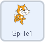
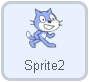
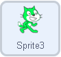
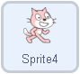
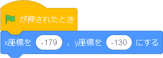
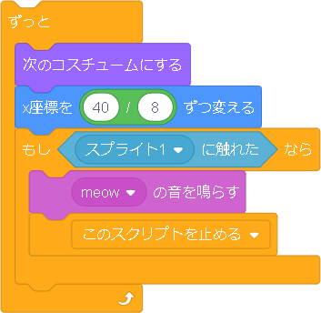

速さのシミュレーション


「速さ」の単元で使用できるプログラムです。 猫さんが一斉にスタートし、ゴールまでの速さの違いを見れるようになってます。 よく、5分後に出発～のような問題がありますが、そういった問題に応用ができそうです。 これは、速さの違いを視覚的にわかるようなプログラムとなっています。
プログラムするスプライト    |
|
プログラム解説 |
|
|  |
まず、最初の旗のものは、プログラムを始めるきっかけになるようなものです。これがないと、プログラムが実行できません。つぎに、＜ｘ座標を-179、ｙ座標を80にする＞とありますが、これは事前準備です。いちについて～、よ～い、どん！の「いちについて～」に当たります。 |
|  |
次に、動きのプログラムになります。この[ずっと]と書かれたブロックを繰り返すことで、動いているように見せています。ざっくりとした繰り返しの流れは、
となっています。詳しく見ていきます。 1.コスチュームを変化させる［次のコスチュームにする］というのは、スプライトは、紙芝居のように何枚も用意することができるので、足を延ばした猫さんのスプライトと足を曲げた猫さんのスプライトを用意し、そのスプライトを交互に表示させることで走ってるように見えるという仕組みです。猫さんが走っているように見せるためのアニメーションの役割を果たすので、あってもなくてもいいです。 2.速さの値分進ませる次の［x座標を 40/8 ずつ変える］は、40が距離、8が時間なのですが、つまり、40/8は速さを表しています。速さ分の長さを繰り返し進ませることで、40/8の速さで猫さんを走らせることができます。 3.止めるタイミングを決めるずっと繰り返していたら猫さんが一生とまらないので、到着の目安を決めています。このプログラムではその目安を［スプライト１に触れた］としています。スプライト１というのは、右側にある棒です。猫さんがそこに当たったら、次にどうするかというと、［meow の音を鳴らす］［このスクリプトを止める］とあります。つまり、猫さんが「にゃお」と鳴き、プログラムが止まります。 |